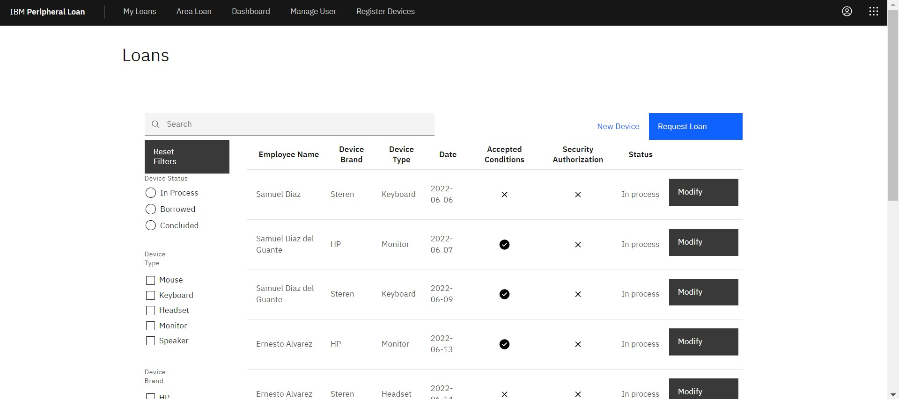
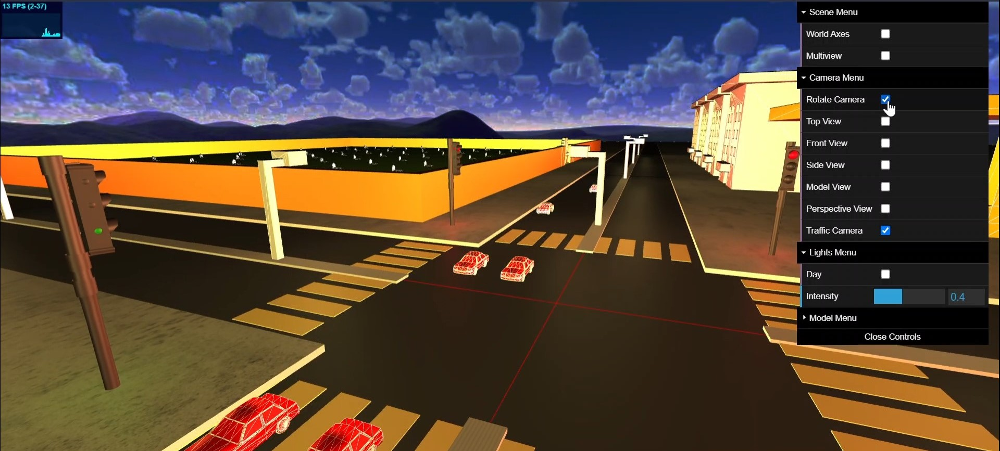
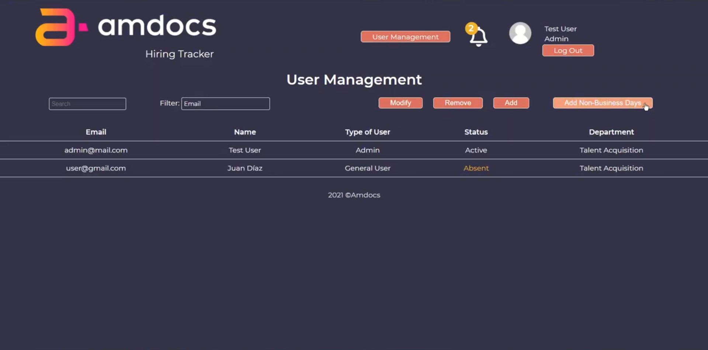
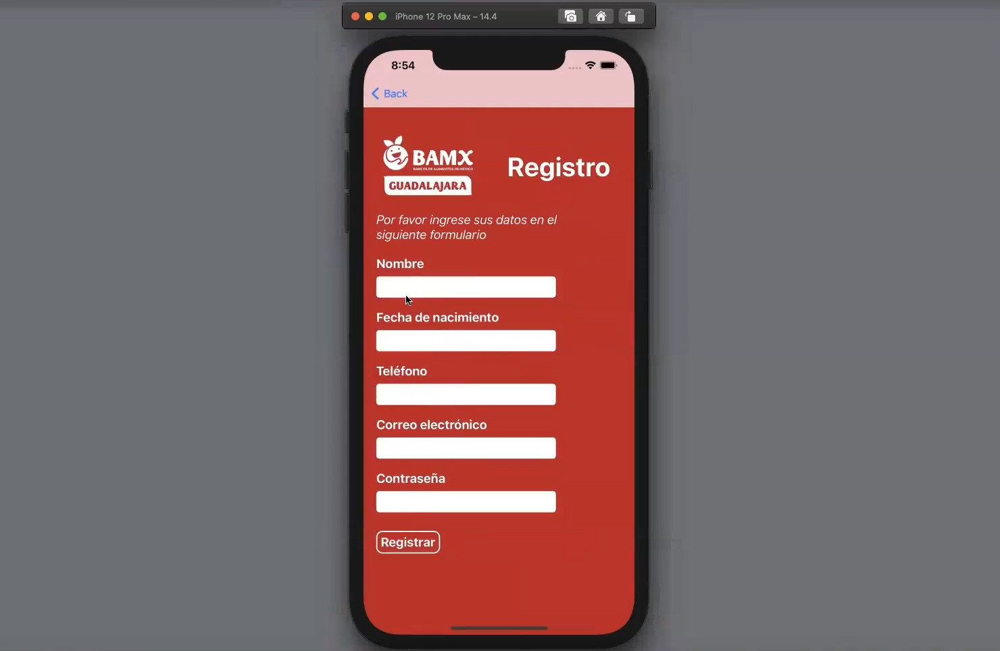
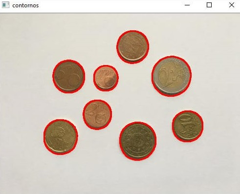

Description: School project where we developed a web application that facilitates the loan process of
peripheral devices and inventory control for the IBM partner-trainer.
Programming languages: Javascript and Typescript.
Tecnologies: Angular, ExpressJs, IBM Db2, Docker and Kubernetes.
My contribution: I worked in the back-end creating endpoints and deploying the app to Kubernetes.
Traffic Simulation
Multi-agent Modeling

Description: School project consisting of two parts; the first is a simulation using multi-agent
systems to model a vehicular intersection with cars and traffic lights. The second part consists of showing
the simulation results in a 3D environment with the ability to change variables like camera perspective and
lighting.
Programming languages: Javascript and Python.
Tecnologies: ThreeJs and Agentpy.
My contribution: I worked in the modeling of the multiagent system using Python and the Agentpy
library.

Description: School project where we developed a web application designed to assist talent
acquisition staff in the recruitment process at every step. This project was a collaboration with Amdocs as
the partner-trainer.
Programming languages: Javascript.
Tecnologies: ExpressJs, SQL, HTML and CSS.
My contribution: I worked in the design and implemetation of some views like the user management
page.

Description: School project where we developed a mobile application for the Food Bank (socio-trainer)
to facilitate the organization's interaction with patrons and donors through incentives, donations and
messages.
Programming languages: Swift.
Tecnologies: XCode and Firebase.
My contribution: I worked in the front-end designing various views and implementing some
functionality.
Driving Behavior
Machine Learning
Description: Create multiple classification models to predict driving behavior (slow, normal and
aggresive) accurately from a large dataset.
Programming languages: Python.
Tecnologies: Jupyter Notebook.
My contribution: Initial data exploration analysis and creation of some versions of the models like
random forest using only two classes.
Water Stage and Discharge
Deep Learning
Description: Create multiple forecast models using numeric values and images to predict the water
stage and discharge levels over the span of many years.
Programming languages: Python.
Tecnologies: Keras and TensorFlow.
My contribution: Dataset and image analysis as well as implementation of some versions of the CNN and
MLP Regressor models.
Description: End result of a Udemy course about game development for beginners in Unity.
Programming languages: C#.
Tecnologies: Unity.
What I learned: Basic videogame and Unity concepts like collision detection, read user input,
implementation of UI elements, sound effects, background music, animations and scene loading.
Edge Contour Filter
OpenCV

Description: Creation of an application that makes use of the convolution function to apply different
filters, highlighting the edge contour of an image captured by a video camera.
Programming languages: Python.
Tecnologies: OpenCV and Git.
What I learned: In this workshop I understood how some OpenCV library algorithms work. This course
was also an introduction to version control using git.